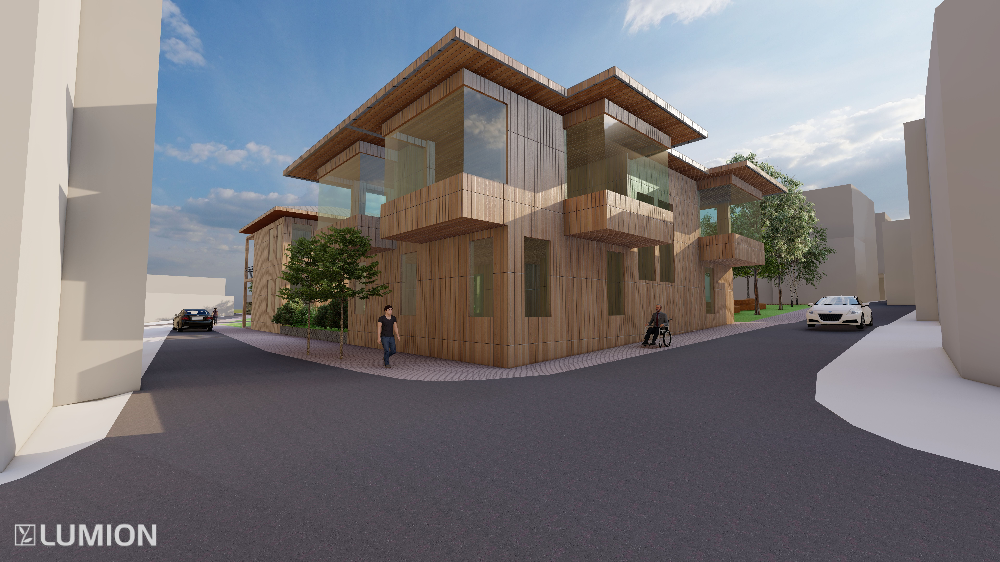
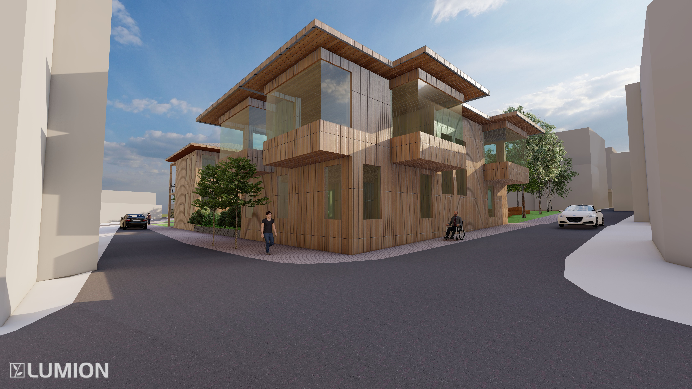

Bursa’nın Osmangazi ilçesinde yer alan proje alanı, tarihi Bursa Çarısı'na Şehreküstü Meydanı’ndan uzanan ulaşım ağı içerisinde bulunmaktadır. Proje kapsamında Bursa'da yüzyıllardır süregelen ipekçilik geleneğinin sürdürülebileceği ve sergilenebileceği bir alan yaratmak amaçlanmıştır. Bu kapsamda ipekçiliğe yönelik atölyeler, derslikler, sergi alanları tasarlanmıştır. Ayrıca proje alanının çevresindeki tarihi hanlar gibi toplayıcı olması hedeflendiğinden mağazalar, restoran, kafe ve peyzajla desteklenmiştir.

 
